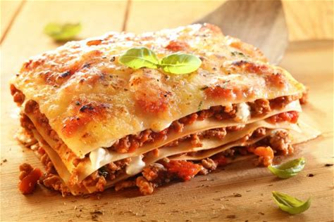

PASTICHO
RETURN

Its a very delicious pasta with meat salsa species and much more. Its called Venezuelan lasagna becaus its exactly as lasagna
but it have a little Venezuelan touch.
All the country in almost all restaurants people can buy it, special italian food. In my charset
after pizza it is my most favorite dish for eat.
INGREDIENTS
- 1 pound ground beef
- 1 pound ground pork
- 1 large Spanish onion, finely chopped
- 1 celery rib, finely chopped
- 1 small carrot, shredded
- 3 tablespoons olive oil
- 4 garlic cloves, minced
- 2 cans (28 ounces each) whole tomatoes with basil, undrained
- 1 can (29 ounces) tomato puree
- 1 bay leaf
- 1 teaspoon salt
MUSHROOM SAUCE
- 2-1/4 cups sliced baby portobello mushrooms
- 1/3 cup butter, cubed
- 1 tablespoon olive oil
- 6 cups heavy whipping cream
- 1/2 teaspoon salt
- 1/4 teaspoon pepper
- 1-1/4 cups shredded Parmesan cheese
LAYERS
- 3 packages (9 ounces each) no-cook lasagna noodles
- 7 cups shredded part-skim mozzarella cheese
- 2 cups shredded Parmesan cheese